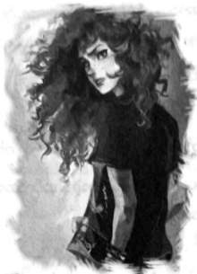

အပေးအယူ
အပိုလိုအဆောင်မှ ဝီလ်ဆိုလေ့စ်ကို ဖမ်းဆွဲရင်း မိုက်ကယ်ယူးကို ဆက်ရှာကြရန် ပါစီ ညွှန်ကြားခဲ့သည်။ ယာမာဟာ ဆိုင်ကယ်တစ်စီး ငှားယူပြီး အမေ မြင်ပါက နှလုံးရောဂါ ရနိုင်သည့် အမြန်နှုန်းဖြင့် ပလာဇာ ဟိုတယ်ဆီသို့ မောင်းလာခဲ့သည်။ တစ်ခါမှ မော်တော်ဆိုင်ကယ် မစီးဖူးသော်လည်း မြင်းပျံ စီးရသည်ထက် ပို၍ ခက်စရာ မရှိပေ။
လမ်းတစ်လျှောက်တွင် ရုပ်တုများ ရှိခဲ့ဖူးသည့် ကျောက်ခုံများကို တွေ့ရပြီး အစီအစဉ် နှစ်ဆယ့်သုံးမှာ အလုပ် ဖြစ်ပုံ ရ၏။ ကောင်းသလား၊ ဆိုးသလားဟု ပါစီ မပြောနိုင်။ ပလာဇာဟိုတယ်သို့ ရောက်ရန် ငါးမိနစ်သာ အချိန်ကြာပြီး ဟိုတယ်မှာ ရှေးခေတ်ဟောင်းပုံကို ကျောက်ဖြူသားများဖြင့် ဆောက်လုပ်ထားပြီး အပြာရောင် အမိုးဖြင့် ဖြစ်သည်။
ပြောရလျှင် ပလာဇာမှာ ဌာနချုပ်စခန်းချရန် အကောင်းဆုံးနေရာ မဟုတ်။ မြို့ထဲတွင် အမြင့်ဆုံး အဆောက်အအုံ မဟုတ်သလို ဗဟိုတွင် ရှိနေခြင်းလည်း မဟုတ်။ သို့သော် ရှေးဟောင်းပုံစံရှိသဖြင့် နတ်သွေးနှောသူ အများအပြား စိတ် ဝင်စားသော နေရာ ဖြစ်လာခဲ့သည်။
ယာမာဟာဆိုင်ကယ်ကို ဟိုတယ်အပြင်ရှိ ရေပန်းနားတွင် ရပ်ထားခဲ့ပြီး ဝီလ်နှင့် ပါစီ ခုန်ဆင်းလိုက်ကြ၏။ ရေပန်း အပေါ်ရှိ အရုပ်က လှမ်းပြောသည်။
“ကောင်းရော … ငါက မင်းတို့ ဆိုင်ကယ်ကိုပါ စောင့်ကြည့်ပေးရတော့မှာပေါ့ …”
လူအရွယ်ရှိ ကြေးဝါအမျိုးသမီး ရုပ်တုဖြစ်ပြီး လက်ထဲတွင် သစ်သီးခြင်းကို ပိုက်ထား၏။ ယခင်က ထိုရုပ်တုကို ပါစီ သတိမထားမိ။ ယခင်က သူ့ကို စကား မပြောခြင်း ကြောင့်လည်း ဖြစ်နိုင်၏။
“ခင်ဗျားက ဒီမီတာလား ..”
ပါစီ့ ခေါင်းပေါ်မှ ကြေးပန်းသီးတစ်လုံး ဖြတ်ပျံသွား၏။
“အားလုံးက ငါ့ကို ဒီမီတာပဲ ထင်ကြတယ် … ငါက ပွန်ပိုနာ ရောမနတ်သမီး … အေးလေ … ဘယ်သူက အရေး မပါတဲ့ နတ်လေးတွေကို ဂရုစိုက်မှာလဲ … နတ်ကလေးတွေကိုသာ ဂရုစိုက်ခဲ့ရင် ဒီစစ်ပွဲကြီးလည်း ဖြစ်မလာနိုင်ဘူး… မော်ဖီးယပ်စ်နဲ့ ဟီကိတ်ကို ချီးကျူးရမယ် ..”
“ဆိုင်ကယ်ကို သေချာကြည့်ထား ……”
လက်တင်စကားဖြင့် ပွန်ပိုနာက ဆဲရင်း ကြေးဝါသစ်သီးများဖြင့် ပစ်ပေါက်ရာ ပါစီနှင့် ဝီလ်တို့ ဟိုတယ်ထဲ ဝင်ပြေးခဲ့ကြသည်။ ဤဟိုတယ်ထဲ ပါစီ တစ်ခါမှ မလာဖူး။ ဓာတ်လှေကားဖြင့် အပေါ်ထပ်ရှိ အထူးခန်းများဆီ တက်ခဲ့ ကြသည်။
အပေါ်ဆုံးထပ်ကို နတ်သွေးနှောသူများ အပိုင်စီးထားကြပြီး ဆိုဖာပေါ်တွင် ထိုင်နေသူ၊ ရေချိုးနေသူ၊ ခန်းစီးစ များ စုတ်ဖြဲ၍ ဒဏ်ရာကို ပတ်တီးစည်းနေသူ၊ အစားအသောက် ယူစားနေသူများကို မြင်နိုင်၏။ ဝံပုလွေများမှာ ရေချိုးခန်း ထဲတွင် ရေသောက်နေကြပြီး သူငယ်ချင်းများစွာ ညတိုက်ပွဲကို အသက်ရှင်လျက် ဖြတ်ကျော်နိုင်ခဲ့သဖြင့် ပါစီ စိတ် သက်သာရာ ရမိသည်။ သို့သော် အများစုမှာ ဒဏ်ရာ နှင့် မကင်းကြ။
“ပါစီ … ငါတို့ သတင်းပို့စရာတွေ ရှိတယ် …”
“ခဏလေး ဂျိတ် … အန်နာဘတ်ရော …”
“ဝရန်တာနားမှာ … မသေသေးပါဘူး … ဒါပေမဲ့ …”
စကားဆုံးအောင် ဆက်နားမထောင်နိုင်ဘဲ ပါစီ ထွက်လာခဲ့သည်။ ဝရန်တာ မှနေ၍ စင်ထရယ် ပန်းခြံကို ကြည့်ခွင့် ရလျှင် ပုံမှန်အချိန်၌ ပျော်ရွှင်စရာ ဖြစ်ပေလိမ့်မည်။ မနက်ခင်းမှာ ကြည်လင်သာယာနေပြီး ပျော်ပွဲစားထွက်ရန်၊ တောင်တက်ရန်၊ မိစ္ဆာများနှင့် စစ်ပွဲဆင်နွှဲရန် အကောင်းဆုံးပင်။
ဆိုဖာတစ်ခုပေါ်တွင် အန်နာဘတ် လဲလျောင်းနေပြီး မျက်နှာဖြူရော်ကာ ချွေးများ သီးနေ၏။ စောင်အထပ်ထပ် ခြုံထားသည့်တိုင် ချမ်း၍တုန်နေပြီး ဆီလီနာ ဗြူရီဂတ် က နဖူးမှ ချွေးများကို သုတ်ပေးနေသည်။ အနီးတွင် ဝိုင်းနေသူ များကို တွန်းဖယ်ကာ ဝီလ်နှင့် ပါစီ အနားကပ်လာခဲ့ကြပြီး အန်နာဘတ်၏ ပတ်တီးကို ဖယ်ကာ ဒဏ်ရာကို ဝီလ်က စစ်ဆေးကြည့်လိုက်သည်။ ဒဏ်ရာကိုမြင်လျှင် ပါစီပင် သတိလစ်ချင်လာ၏။ သွေးမထွက်တော့သည့်တိုင် ဒဏ်ရာမှာ အလွန်နက်ပုံ ရပြီး ဒဏ်ရာ ပတ်ပတ်လည်ရှိ အရေပြားအားလုံးမှာ ဆိုးဆိုးဝါးဝါး စိမ်းရောင်သမ်းနေခဲ့သည်။
“အန်နာဘတ် …”
သူ့ကို ထိုးမည့် ဓားကို ဝင်ခံပေးခဲ့ခြင်း ဖြစ်ပြီး ထိုကိစ္စအတွက် ပါစီ နောင်တရမိသည်။
“ဓားမှာ အဆိပ်ပါတယ် …”
အန်နာဘတ်က ဖျော့တော့စွာဖြင့် ဆို၏။
“ငါ ငတုံးပဲ … ဟုတ်လား …”
ဝီလ်ဆိုလေ့စ်မှာ စိတ်သက်သာရာ ရသွားဟန် ရှိသည်။
“သိပ်မဆိုးသေးဘူး အန်နာဘတ် … မိနစ်နည်းနည်း နောက်ကျရင် ငါတော့ ဒုက္ခရောက်သွားလိမ့်မယ်… ခုကျ တော့ အဆိပ်က ပခုံးကို မကျော်သေးဘူး … ငြိမ်ငြိမ်လေး လှဲနေ … ငါ့ကို နတ်ဩဇာ ပေးကြပါ …”
နတ်ဩဇာဘူးကို ပါစီ လှမ်းပေးလိုက်လျှင် ဝီလ်က ဒဏ်ရာကို နတ်ဩဇာရည်ဖြင့် ဆေးကြောပေးစဉ် ပါစီက အန်နာဘတ် လက်ကို ဆုပ်ကိုင်ထားပေးသည်။
“အား .. အား …”
ပါစီ့လက်ကို အလွန်တင်းကျပ်စွာ ဆုပ်ကိုင်ထားသော်လည်း ဝီလ် ပြောသလို အန်နာဘတ် လုံးဝမလှုပ်ချေ။ ဘေးနားရှိ ဆီလီနာက အားပေးစကား တတွတ်တွတ် ပြောနေ၏။ ငွေရောင်ဆေးရည် ပျစ်ချွဲချွဲများကို ဒဏ်ရာပေါ်တွင် သုတ်လိမ်းလိုက်ပြီး ရှေးဟောင်းဂရိဘာသာစကားဖြင့် အပိုလို၏ စာသားအချို့ကို ဝီလ် ရေရွတ် လိုက်သည်။ ထို့နောက် ပတ်တီးအသစ် စည်းပေးကာ ဒယိမ်းဒယိုင်ဖြင့် ဝီလ် ထရပ်လိုက်သည်။ ဒဏ်ရာကုသမှုမှာ သူ၏စွမ်းအားများစွာ သုံးခဲ့ရပုံ ပေါ်ပြီး ဝီလ်မှာ ယခု အခါ အန်နာဘတ် လိုပင် ဖျော့တော့တော့ ဖြစ်နေသည်။
“ဒီလောက်ဆို ရပြီ … ဒါပေမဲ့ လူတွေသုံးတဲ့ ဆေးတွေလည်း လိုလိမ့်မယ်”
ဟိုတယ်မှ ပေးထားသော မှတ်စုစာအုပ်ရှိ စာရွက်တွင် ဆေးနာမည်အချို့ ချရေးရင်း အက်သီနာ အဆောင်မှ တစ်ယောက်အား လှမ်းပေးလိုက်သည်။
“ဆေးဆိုင်တွေ ပေါပါတယ် … ပုံမှန်အချိန်ဆို ခိုးစရာ မလိုပေမဲ့ …”
“ငါ ခိုးပေးမယ် ...”
ထရာဗစ်က တာဝန်ခံ၏။ ဝီလ်က ထရာဗစ်ကို မျက်စောင်းထိုးသည်။
“ဆေးတွေယူပြီး ပိုက်ဆံ ဒါမှမဟုတ် ရွှေဒင်္ဂါး ထားပစ်ခဲ့ … ဆေးရဖို့ အရမ်း အရေးကြီးတယ် … ဒဏ်ရာရတဲ့ သူတွေ ပိုများလာဖို့ပဲ ရှိတယ်လို့ ငါ ထင်နေတယ်”
ထိုစကားကို ကွန့်ကွက်မည့်သူ မရှိ။ ပြောရလျှင် ယခုအချိန်မှာပင် ပါစီမှ အပ ကျန်သင်တန်းသား အားလုံး ဒဏ်ရာ ကိုယ်စီ ရထားကြသည်။
“ကဲ သွားရအောင် … ဆေးဆိုင်တွေ ဝင်ခိုး … အဲလေ … ဝင်ဝယ်ရအောင် …”
ထရာဗစ်ကဆိုလျှင် သင်တန်းသားများ အတွင်းသို့ ပြန်ဝင်သွားကြသည်။ ဂျိတ်မေဆန်က ပြန်မဝင်ခင် ပါစီ့နား ကပ်လာပြီး ပြောသည်။
“နောက်မှ စကားပြောကြတာပေါ့ … အခုတော့ အားလုံး မဆိုးလှပါဘူး … အန်နာဘတ်ရဲ့ဒိုင်းနဲ့ ငါ အခြေအနေကို စောင့်ကြည့်ပေးမယ် … နေထွက်လာတော့ ရန်သူတွေ ပြန်ဆုတ်သွားကြတယ် … ဘာလို့လဲတော့ မသိဘူး … တံတားတွေ လိုဏ်ခေါင်းတွေ အကုန် အစောင့်ချထားတယ် …”
“ကျေးဇူးပဲ …”
“အေးအေးဆေးဆေး နေ ..”
ဝရန်တာတံခါးကို ဂျိတ် ပိတ်ပေးသွားသဖြင့် ဆီလီနာ၊ အန်နာဘတ်နှင့် ပါစီ တို့သာ ကျန်ရစ်သည်။
ဆီလီနာက ရေဆွတ်ထားသော အဝတ်ဖြင့် အန်နာဘတ်၏ နဖူးကို သုတ်ပေးရင်း ...
“အားလုံး ငါ့အပြစ်တွေပဲ …”
“မဟုတ်တာ … နင်နဲ့ ဘာဆိုင်လို့လဲ”
ဖျော့တော့ အားနည်းစွာဖြင့် အန်နာဘတ် ပြန်ပြောသည်။
“ငါက သင်တန်းမှာ ဘယ်တုန်းကမှ မထူးချွန်ခဲ့ဘူး … နင်တို့ ပါစီတို့လို မဟုတ်ဘူး … ငါသာ တိုက်ခိုက်ရေး ကျွမ်းကျင်ခဲ့ရင် …”
ဘက်ကင်ဒေါ့ဖ် သေပြီးချိန်ကတည်းက ဆီလီနာ့ အခြေအနေမှာ တစ်နေ့ တခြား ဆိုးဝါးလာခဲ့သည်။ ဆီလီနာကို မြင်ရသည်မှာ ချက်ချင်း ကွဲကြေသွားနိုင်သည့် ဖန်ရုပ်လေးနှင့် တူနေသည်။ ထိုသို့မြင်ရတိုင်း သင်တန်းရှိ သူလျှိုကို ဖမ်းမိလျှင် မစ္စအိုလာရီ အပျင်းပြေဝါးရန် အရုပ်အဖြစ် ပေးပစ်ချင်လာမိသည်။
“ဆီလီနာ … နင်က တော်ပါတယ် … မြင်းပျံ စီးတဲ့နေရာမှာ ဘယ်သူမှ နင့်ကို မမီဘူး မဟုတ်လား … နင်က လူတွေနဲ့လည်း တည့်အောင် ပေါင်းနိုင်တယ်…. ကလဲရစ်နဲ့ တည့်အောင် ပေါင်းနိုင်တာ နင် တော်လို့ပဲ … ငါ ပြောတာ ယုံစမ်းပါ”
ပါစီ့စကားကို ကြားလျှင် အကြံရသွားဟန်ဖြင့် ဆီလီနာ မော့ကြည့်လာသည်။
“ငါ သိပြီ … အေးရီးစ်အဆောင်ကို လိုနေတာ … ကလဲရစ်ကို ငါ သွားပြောမယ် … စစ်ကူပေးဖို့ ….”
“ဆီလီနာ … ကျွန်းပေါ်က ထွက်သွားနိုင်ရင်တောင် ကလဲရစ် ဘယ်လောက် ခေါင်းမာသလဲ နင် သိတာပဲ … စိတ်လည်း ဆိုးနေလိမ့်မယ် …”
“ငါ မြင်းပျံနဲ့ သွားလို့ရတယ်လေ … သင်တန်းကို ရောက်အောင် ပြန်နိုင်ပါတယ် … ပြန်ပါရစေ … ကြိုးစား ကြည့်ချင်လို့ပါ …”
ထိုအကြံကို ပါစီ သဘောမကျ။ ကလဲရစ်ကို ဆွဲဆောင်နိုင်လိမ့်မည်ဟု ပါစီ မထင်။ သို့သော် ယခုအချိန်တွင် ဆီလီနာမှာ အလွန်စိတ်ဓာတ်ကျနေပုံ ရပြီး တိုက်ပွဲ ဝင်ပါက အလွယ်တကူပင် ဒုက္ခဖြစ်သွားနိုင်သည်။ သင်တန်း ပြန်လွှတ် လိုက်ပါက သူမအတွက် အာရုံစိုက်စရာ တစ်ခုခု ရလာနိုင်၏။
“ကောင်းပြီလေ … ဒီတာဝန်အတွက် နင်က အသင့်လျော်ဆုံးပဲ …”
ဝမ်းသာအားရဖြင့် ပါစီကို ဖက်လိုက်ပြီးမှ အန်နာဘတ်ကို လှမ်းကြည့်ရင်း ဆီလီနာ ချက်ချင်း နောက်ဆုတ် သွားသည်။
“ဆောရီး … ကျေးဇူးပဲ ပါစီ … အောင်မြင်အောင် ကြိုးစားခဲ့မယ် …”
ဆီလီနာ ထွက်သွားလျှင် အန်နာဘတ် ဘေးနား၌ ပါစီ ဒူးထောက်ထိုင်ရင်း နဖူးကို စမ်းကြည့်လိုက်သည်။ ခြစ်ခြစ် တောက် ပူနေဆဲပင်။
“စိတ်ပူနေတဲ့အချိန်ဆို နင်က ကြည့်ကောင်းတယ် … မျက်မှောင်ကြီး ကုတ်နေရော ..”
အန်နာဘတ်က လေသံမျှဖြင့် ပြော၏။
“နင့်ကို ငါ အကြွေး ပြန်ဆပ်ရဦးမှာ … နင် သေလို့ မဖြစ်ဘူး … ဘာလို့ ဓားကို ဝင်ကာရတာလဲ …”
“နင်လည်း ငါ့အတွက်ဆို ဒီလိုပဲ လုပ်မှာ မဟုတ်လား”
ထိုစကား အမှန်ဟု ပါစီတို့နှစ်ယောက်လုံး သိနေသည်။ သို့တိုင် နှလုံးသားကို အေးစက်စက် ဓားဖြင့် ထိုးနေ သကဲ့သို့ ပါစီ ခံစားနေရ၏။
“နင် ဘယ်လို သိတာလဲ …”
“ဘာကို သိရမှာလဲ …” -
မည်သူမျှမရှိမှန်း သေချာစေရန် ပတ်ဝန်းကျင်ကို ပါစီ လှည့်ပတ်ကြည့်လိုက်သည်။ ထို့နောက် အန်နာဘတ် အနားကပ်ကာ ခပ်တိုးတိုးပြောလိုက်၏။
“ငါ့ခန္ဓာကိုယ်ရဲ့ ဟာကွက်လေ … နင်သာ ဝင်မကာရင် ငါ သေချင် သေသွားနိုင်တယ် …”
အန်နာဘတ်မှာ တစ်စုံတစ်ရာကို စဉ်းစားနေပုံနှင့် ငေးနေ၏။
“ငါလည်း မသိပါဘူး ပါစီ … နင် အန္တရာယ်နဲ့ ကြုံနေပြီလို့ပဲ ငါ ထင်မိလို့ ဝင် ကာလိုက်တာ … နင့် ဟာကွက်က ဘယ်မှာလဲ …”
မည်သူ့ကိုမှ ပြောရန် မသင့်သောကိစ္စ ဖြစ်သော်လည်း အန်နာဘတ်ကိုမှ မယုံရလျှင် ကမ္ဘာပေါ်တွင် ယုံရမည့်သူ မရှိတော့။
“ကျောမှာ …”
“ဒီနေရာလား …”
ကျောရိုးပေါ် အန်နာဘတ်၏ လက် ရောက်လာလျှင် ဓာတ်လိုက် သလိုလို ခံစားရသည်။ လူသားအဖြစ် ဤ ကမ္ဘာနှင့် ချိတ်ဆက်ထားသော နေရာသို့ သူမ၏ လက်ချောင်းများကို ဆွဲရွှေ့ပေးလိုက်ပြီးလျှင် ပါစီ တစ်ကိုယ်လုံး လျှပ်စီး ကြောင်းများ စီးဆင်းသွားသလို ခံစားရ၏။
“ငါ့အသက်ကို နင် ကယ်လိုက်တာ … ကျေးဇူးပဲ”
အန်နာဘတ်လက်ကို ဖယ်လိုက်သော်လည်း လွှတ်မပေးဘဲ ပါစီ ဆက် ကိုင်ထားလိုက်သည်။
“ကျေးဇူးကြွေး တင်ပြန်ပြီလား … မထူးဆန်းပါဘူးဟာ ….”
နေ ထွက်လာသည်ကို အတူတူ ကြည့်နေမိကြသည်။ ယခုအချိန်ဆိုလျှင် ကားသံများ ဆူညံနေသင့်သော်လည်း အားလုံး တိတ်တိတ်ဆိတ်ဆိတ်ပင် ရှိနေသည်။
အဝေးတစ်နေရာမှ အနက်ရောင်မီးခိုးများ အလိပ်လိုက် တက်နေသည်ကို ပါစီ မြင်ရသည်။ မီးဖိုမီး မပိတ်မိဘဲ အိပ်ပျော်သွားသူများ နည်းလိမ့်မည် မဟုတ်။ မကြာမီ ကာလအတွင်း မီးလောင်မှုများ ပိုဆိုးလာနိုင်သည်။ နယူးယော့ခ် တစ်မြို့လုံး အန္တရာယ် ကျရောက်နေပြီး တစ်မြို့လုံးရှိ အသက်များစွာကို ကယ်တင်ရန်မှာ ပါစီတို့၏ တာဝန် ဖြစ်နေသည်။
“ဟားမီးစ် ဘာလို့ ငါ့ကို စိတ်ဆိုးနေတာလဲလို့ နင် မေးဖူးတယ်နော် …”
“ဟေး … နားနားနေနေ နေစမ်းပါ …”
“ဟင့်အင်း … နင့်ကို ငါ ပြောပြချင်တယ် … ငါ့ကို စိတ်အနှောင့်အယှက် ပေးခဲ့တာလည်း ကြာပြီ … မနှစ်က ဆန်ဖရန်စစ္စကိုမှာ ငါ့ကို လုပ်ခ် လာတွေ့တယ်”
တူဖြင့် အထုခံရသကဲ့သို့ ပါစီ ခံစားလိုက်ရသည်။
“လူကိုယ်တိုင် နင့်အိမ်ကို လာတာလား …”
“ငါတို့ ဝင်္ကပါထဲ မဝင်ခင် … သူ … သူလည်း …”
အန်နာဘတ် ဘာမှဆက်မပြောသော်လည်း ခရိုနော့စ်အဖြစ် လုပ်ခ် မပြောင်းလဲခင်ကဟု ပါစီ သိလိုက်သည်။
“သူက လက်နက်ချပြီးလာတာ … ငါးမိနစ်ပဲ စကားပြောပါရစေတဲ့ … သူ့ ကြည့်ရတာ အရမ်းကြောက်နေတယ် … ခရိုနော့စ်က သူ့ကို အသုံးချပြီး ကမ္ဘာကြီးကို စိုးမိုးတော့မှာတဲ့ … အရင်တုန်းကလိုပဲ ထွက်ပြေးရအောင်တဲ့ … ငါ့ကို လိုက်ခဲ့ဖို့ လာခေါ်တာ …”
“နင် သူ့ကို မယုံဘူး မဟုတ်လား …”
“ဘယ်ယုံမလဲ … ငါ့ကို ညာနေတယ်ပဲ ထင်တာပေါ့ … အရင်ကနဲ့လည်း မတူတော့ဘူးလေ … မဖြစ်နိုင်ဘူးလို့ ငါ ပြောတော့ လုပ်ခ် စိတ်ဆိုးသွားတယ် … ဒါဆိုလည်း သူနဲ့ နေရာမှာပဲ ဓားချင်းယှဉ်ရအောင်တဲ့ … ငါ့အတွက် နောက်ဆုံး အခွင့်အရေးပဲ လို့လည်း ပြောသေးတယ်”
အန်နာဘတ် နဖူးတွင် ချွေးများ သီးလာကြပြန်သည်။ ထိုမျှ စကားပြောရုံနှင့် အလွန် အင်အားကုန်သွားပုံရ၏။
“တော်တော့ … နားလိုက်ဦး …”
“နင် နားမလည်ဘူး ပါစီ … ဟားမီးစ်ပြောတာ မှန်ချင်မှန်မှာ … ငါသာ လိုက်သွားရင် သူ့စိတ်ကို ပြောင်းချင် ပြောင်းပေးနိုင်မှာ … ငါ့မှာ ဓားမြှောင်ပါတယ် … လုပ်ခ် မှာ လက်နက်မပါဘူး …. ငါသာ … ငါသာ ...”
“သူ့ကို သတ်ဖို့လား … ဒါက အဖြေမှန်မှ မဟုတ်တာ ….”
အန်နာဘတ် မျက်လုံးကို တင်းတင်း ပိတ်ထားလိုက်သည်။
“လုပ်ခ်ပြောတော့ ခရိုနော့စ်က သူ့ကို လှေကားလိုနင်းပြီး တက်မှာတဲ့ … အဲဒီ အတိုင်းကို ပြောခဲ့တာ … လုပ်ခ်ကို အသုံးချပြီး စွမ်းအား ပိုကြီးလာမယ့်ပုံပဲ …”
“လုပ်ပြီးပြီလေ …အခု လုပ်ခ်ရဲ့ ခန္ဓာကိုယ်ကို အပိုင်စီးထားတာပဲ”
“လုပ်ခ်ရဲ့ ခန္ဓာကိုယ်က အကူးအပြောင်းလုပ်ရုံ နေရာသက်သက်ဆိုရင် ဘယ်လိုလုပ်မလဲ … ဒီထက် စွမ်းအား ကြီးလာဖို့ အကြံဉာဏ် ခရိုနော့စ်မှာ ရှိနိုင်တယ် … သူ့ကို ငါ တားခဲ့ရမှာ … ဒီစစ်ပွဲဖြစ်ရတာ ငါ့အမှားပဲ”
သူမ၏ဇာတ်လမ်းကို နားထောင်ရသည်မှာ စတစ်မြစ်ရေထဲတွင် အရည်ပျော်ကျသွားရသလိုပင်။ ခေါင်းနှစ်လုံးနှင့် နတ် ဂျေနပ်စ်က အန်နာဘတ်ကို အဓိက ရွေးချယ်မှုကြီး လုပ်ရတော့မည်ဟု သတိပေးခဲ့ပြီး ထိုအချိန်တွင် လုပ်ခ်နှင့် တွေ့ခဲ့ပြီးပေပြီ။ ပန်ကလည်း သူမကို သတိပေးခဲ့၏။ “ထင်မထားသော နေရာတွင် အဓိက ပါဝင်ရမည်” ဟု ဆိုခဲ့ဖူးသည်။
ဟက်စ်တီယာပြသော မြင်ကွင်းများအကြောင်း အန်နာဘတ်ကို ပါစီ မေးချင်သည်။ ဟောကိန်းနှင့် ပတ်သက် နေမှန်း သိသော်လည်း ဘယ်လိုပတ်သက်မှန်း သူ မသိ။ သတ္တိရှိရှိပြောရန် သတ္တိရှာနေစဉ်မှာပင် ဝရန်တာတံခါး ပွင့်လာပြီး ကော်နာ စတိုလ် ထွက်လာ၏။
“ပါစီ …”
အန်နာဘတ်ကို ကြည့်ရင်း သူမရှေ့တွင် သတင်းဆိုးကို မပြောလိုဟန်ဖြင့် ကော်နာ တုံ့ဆိုင်းနေသည်။
“မစ္စအိုလာရီနဲ့ ဂရိုဗာ ရောက်လာပြီ … သူနဲ့ သွားစကားပြောလိုက်ဦး …”
ဧည့်ခန်းထဲတွင် ဂရိုဗာ မုန့်စားနေ၏။ သူ၏ ချပ်ဝတ်တန်ဆာမှာ သစ်ခေါက်များနှင့် လုပ်ထားပြီး သစ်သား တင်းပုတ်ကို ကိုင်ထားကာ ခါးပတ်တွင် ပလွေကို ချိတ်ထားသည်။ ဒီမီတာ အဆောင်က ဟိုတယ်မီးဖိုထဲမှ စားစရာများ ယူလာခဲ့ပြီး ပီဇာမှစကာ ရေခဲမုန့်ထိ စုံလင်လှ၏။ သို့သော် ဂရိုဗာမှာ ဆိတ်ပီသစွာ ဆိုဖာကို ဝါးစားနေ၏။
“ဟေ့ကောင် … ဒါ သူများဟိုတယ်ကွ … ခဏ ငှားသုံးတာ”
“ပဲ … ဟဲ .. ဟဲ … ဆောရီးပဲ ပါစီ … ငါ စိတ်လှုပ်ရှားလာရင် ပရိဘောဂတွေ ဝါးစားချင်လာကော … မင်းလည်း သိပါတယ်”
“အင်း … ကဲ … ပြောပါဦး …”
“အန်နာဘတ်သတင်း ငါ ကြားတယ် … ဘယ်လို နေသေးလဲ”
“နားနေတယ် … ကောင်းသွားမှာပါ”
ဂရိုဗာက သက်ပြင်းချရင်း ပြောသည်။
“တော်သေးတာပေါ့ … မြို့ထဲက သဘာဝ ဝိညာဉ်တွေကို ငါ ရသရွေ့ စုစည်း ပြီးပြီ … ငါ့စကား နားထောင်တဲ့ သူတွေ ပဲပေါ့ … ငါတို့လည်း တတ်နိုင်သရွေ့ ကူညီပါ့မယ်”
ပါစီတို့ အင်အား မလုံလောက်သော နေရာများကို ဂရိုဗာနှင့် သဘာဝနတ်လေးများက အင်အားဖြည့်ပေး ထားကြသည်။ နေရာတိုင်းလိုလိုတွင် ငရဲခွေးများကို တွေ့နေရပြီး အရိပ်ခရီးသွားကာ ဝင်လာကြခြင်း ဖြစ်၏။ သင်ပင် နတ်သမီးလေးများ၊ ဆေတာများလည်း တိုက်ခိုက်မှုတွင် ပါဝင်ခဲ့ကြသည်။ ဟာလမ်းတွင် နဂါး ခပ်ငယ်ငယ် တစ်ကောင် ရောက်လာပြီး ထိုနဂါးကို နှိမ်နင်းရန် သစ်ပင်စောင့်နတ် တစ်ဒါဇင် ကျဆုံးခဲ့ရသည်။
ဂရိုဗာ စကားပြောနေလျှင် တာလီယာနှင့် သူ့လက်ထောက် နှစ်ယောက် အခန်းထဲ ဝင်လာကြသည်။ ပါစီ့ကို ခေါင်းညိတ်နှုတ်ဆက်ရင်း အန်နာဘတ်ရှိရာဆီ ထွက်သွားကာ ခဏအကြာတွင် ပြန်ဝင်လာ၏။ ဂရိုဗာသတင်းများမှာ နားထောင်လေ ပိုဆိုးလေပင် ဖြစ်သည်။
“ဂျော့ဝါရှင်တန်မှာ ငါတို့ ဘီလူးနဲ့ ရင်ဆိုင်တော့ ဆေတာ နှစ်ဆယ်လောက် ကျတယ် … ငါ့တပ်ဖွဲ့ အင်အား တစ်ဝက်နီးပါးပဲ … မြစ်စောင့် နတ်သမီးလေးတွေက ဘီလူးကို နောက်ဆုံးကျ ရေနှစ်သတ်ပစ်လိုက်တယ် … ဒါပေမဲ့…”
ဂရိုဗာ့အသံ တုန်နေ၏။
တာလီယာက လေးကို ကျောတွင် လွယ်လိုက်ရင်း …
”ခရိုနော့စ်တပ်တွေက လိုဏ်ခေါင်းတွေ၊ တံတားတွေမှာ စုဝေးနေကြတုန်း ပဲ ပါစီ … တိုက်တန်ထဲကလည်း ခရိုနော့စ် တစ်ယောက်တည်း မဟုတ်ဘူး … ငါ့ အဖွဲ့ထဲက တွေ့လာတာ ဂျာဆီကမ်းခြေမှာ ရွှေရောင် ချပ်ဝတ်တန်ဆာနဲ့ တိုက်တန် တစ်ယောက်တဲ့ … ဘယ်သူလဲတော့ ငါ မသိဘူး … သူ့ စွမ်းအားအရတော့ တိုက်တန်မဟုတ်ရင် နတ်ပဲ …”
အိပ်မက်ထဲမှ ရွှေရောင်တိုက်တန်ကို ပါစီ သတိရလာ၏။
“ကောင်းရော … သတင်းကောင်းများ ရှိကြသေးလား …”
“မြေအောက်ရထားလမ်းတွေကို ငါတို့ ပိတ်ထားတယ် … ထောင်ချောက်တွေ ဆင်ထားတယ်… ရန်သူတွေ ကြည့်ရတာ ညဘက်မှ စစ်ဆင်မယ့်ပုံပဲ … လုပ်ခ် … အဲ … ခရိုနော့စ် ကြည့်ရတာ တိုက်ပွဲအတွက် အင်အားမွေးနေပုံပဲ … သူ့ ပုံစံအသစ်နဲ့ အသားမကျသေးဘူး ထင်တယ်… မြို့ပတ်ပတ်လည်မှာ အချိန်နှေးနေအောင် အတော်ကြီး အင်အားသုံး ပြင်ဆင်ခဲ့ရပုံပဲ”
ဂရိုဗာက ခေါင်းညိတ် ထောက်ခံလိုက်သည်။
“သူ့ရဲ့မိစ္ဆာ အများစုက ညဘက်ဆို ပိုစွမ်းကြတယ် … နေဝင်ရင် ပြန်လာကြလိမ့်မယ်”
“နတ်တွေဆီက ဘာသတင်းရသလဲ”
ပါစီ့ အမေးကို တာလီယာ ခေါင်းခါပြသည်။
“ထွက်လာနိုင်ရင် သခင်မ အာတီးမစ် ဒီကိုလာမှာ … အက်သီနာလည်း မနေဘူး … ဇုစ်က သူတို့ကို ဘယ်မှမ သွားရဘူး အမိန့်ထုတ်ထားတယ် … ငါ ကြားရသလောက် တိုက်ဖွန်းက အိုဟိုင်အို တောင်ကြားကို ဖျက်ဆီးပစ်လိုက်ပြီတဲ့ …”
“ဒီတော့ လွန်ရော နောက်ထပ် နှစ်ရက်ဆို ဒီကို တိုက်ဖွန်း ရောက်လာတော့ မှာပေါ့ ….”
ဂျိတ်မေဆန် ချောင်းဟန့်လိုက်သည်။ အလွန် တိတ်ဆိတ်စွာ ရှိနေသဖြင့် သူ ရှိနေမှန်းပင် ပါစီ မေ့နေမိသည်။
“ငါ တစ်ခု ပြောချင်သေးတယ် … ဝီလီယံဘတ်ခ် တံတားကို ခရိုနော့စ် ရောက်လာတာ ထူးဆန်းနေတယ် … ငါတို့ ရှိတာ ကြိုသိနေသလိုပဲ … သူ့တပ်တွေကို အင်အားအနည်းဆုံး နေရာကနေ ထိုးဖောက်နေတယ် … ငါတို့ အင်အား ဖြည့်လိုက်ရင် နောက်ဆုတ်သွားကြပြန်ရော … အမဲလိုက်အဖွဲ့တွင် အင်အားအပြည့်ရှိတဲ့ လင်ကွန်းလိုဏ်ခေါင်း ကိုကျ ထိတောင် မထိသွားဘူး … ငါတို့ အားနည်းတဲ့ နေရာကိုမှ ရွေးတိုက်တာ … သိနေတဲ့ပုံမျိုးပဲ …”
“ငါတို့ထဲမှာ သူလျှိုရှိနေပြီလို့ မင်းက ပြောချင်တာ မဟုတ်လား …”
“ဘယ်လို …”
တာလီယာပါ စိတ်ဝင်စားသွားသဖြင့် ခရိုနော့စ်ပြသော ငွေကြိုးနှင့် သူလျှို ရှိနိုင်ကြောင်းကို ရှင်းပြမိသည်။
“ဆိုးတာပဲ … တော်တော့ကို ဆိုးတာပဲ …”
ဂျိတ်က …
“ဘယ်သူမဆို ဖြစ်နိုင်တယ် … ပါစီ အမိန့်ပေးတုန်းက အားလုံး ရှိနေကြတာ ဆိုတော့ ...”
ဂရိုဗာက …
“ဘာလုပ်လို့ ရမှာလဲ … ရှိရှိသမျှ သင်တန်းသားတွေကို တုံးလုံးချွတ်ခိုင်းပြီး ရှာကြမှာလား …”
အားလုံးက ပါစီ့ကို ကြည့်လိုက်သည်။ သူ့ဆုံးဖြတ်ချက်ကို စောင့်နေကြခြင်းပင်။ အခြေအနေ အားလုံး မျှော်လင့်ချက် မရှိဟု ခံစားရသည့်တိုင် သူတို့ကို ကြောက်နေကြောင်း ပြ၍မဖြစ်။
“ငါတို့ ဆက်တိုက်ပွဲဝင်ကြမယ် … သူလျှိုအကြောင်း ခေါင်းထဲ ထည့်နေလို့ မဖြစ်ဘူး … တစ်ယောက်ကို တစ်ယောက် သံသယ ဝင်နေကြရင် ငါတို့တွေ အောင်မြင်မှာ မဟုတ်ဘူး … မနေ့ညက အားလုံး ရဲရဲရင့်ရင့် တိုက်ပွဲ ဝင်ခဲ့ ကြတယ် … ဒီ့ထက် ရဲရင့်တဲ့စစ်တပ် မရှိနိုင်ဘူး … ကင်းစောင့်ဖို့ အလှည့်ကျ ခွဲပေးပြီးရင် အားလုံး နားကြတော့ … တစ်ည လုံး တိုက်ပွဲ ၀င်ကြရလိမ့်မယ် …”
သဘောတူကြောင်း ထောက်ခံကြရင်း အနားယူရန် စားသောက်ရန် လက်နက်များ ပြင်ဆင်ရန် အသီးသီး လူစုခွဲ သွားကြတော့သည်။
တာလီယာက …
“နင်လည်း နားတော့ ပါစီ… ငါတို့တွေ ကင်းစောင့်ထားမယ် … ခဏလောက် အိပ်လိုက်… ဒီည နင် အင်အားပြည့် နေဖို့ အရေးကြီးတယ်”
ပြင်းပြင်းထန်ထန် မငြင်းနိုင်တော့။ အနီးဆုံးအိပ်ခန်းကို ရှာကာ လှဲချလိုက်သည်။ အိပ်ပျော်ရန် ခက်ခဲမည်ဟု ထင်မိသော်လည်း မျက်စိ မှိတ်လိုက်သည်နှင့် ချက်ချင်း အိပ်ပျော်သွားခဲ့သည်။
အိပ်မက်ထဲတွင် နီကိုဒီအန်ဂျလိုကို တွေ့ရပြီး ဟေးဒီးစ်၏ ဥယျာဉ်ထဲတွင် တစ်ယောက်တည်း ရှိနေသည်။ ပါစီဖုန်း၏ ပန်းခင်းထဲတွင် တွင်းတူးနေပြီး ဟေးဒီးစ်၏ မိဘုရားကြီး သိလျှင် သဘောကျမည် မဟုတ်ချေ။
တွင်းထဲသို့ ဝိုင်တစ်ခွက် လောင်းထည့်ရင်း တတွတ်တွတ် ရေရွတ်လိုက်သည်။
“သေသူတွေ အရသာ ခံနိုင်ပါစေ … ပြန်ထပြီး သုံးဆောင်ကြပါ … မာရီယာ ဒီအန်ဂျလို … လာခဲ့ …”
အဖြူရောင် အခိုးအငွေ့များ စုဝေးလာပြီး လူပုံစံ ဖြစ်လာသော်လည်း နီကို့အမေ မဟုတ်။ အနက်ရောင်ဆံပင်နှင့် ငွေရောင်အဝတ်အစားများ ဝတ်ထားသော အမဲလိုက်အဖွဲ့ဝင် တစ်ယောက်သာ ဖြစ်နေ၏။
“ဘီရန်ကာ … ဘယ်လို …”
“အမေ့ကို မခေါ်ပါနဲ့လား နီကို … အမေ့ဝိညာဉ်နဲ့ နင် တွေ့ ခွင့် မရှိဘူး”
“ဘာလို့လဲ … အဖေ ဘာတွေ ဝှက်ထားသလဲ …”
“နာကျင်မှု … မုန်းတီးမှု … မဟာဟောကိန်းကြီးက စလာတဲ့ကျိန်စာ”
“နင် ဘာပြောချင်တာလဲ … ငါ သိရမှ ဖြစ်မယ်”
“သိရလည်း နာကျင်ရုံပဲ … ငါ ပြောခဲ့ဖူးတယ်လေ … ဟေးဒီးစ်ရဲ့ ကလေးတွေမှာ အားနည်းချက်က အခဲမကျေဘဲ အညှိုးအတေး ကြီးတတ်တာလို့ …”
“ငါ သိပါတယ် … ငါက အရင်လို မဟုတ်တော့ပါဘူး … ငါ့ကို ကာကွယ်ပေးစရာ မလိုတော့ပါဘူး …”
“နင် နားမလည်သေးပါဘူး …”
နီကို လက်ဝှေ့ယမ်းလိုက်လျှင် ဘီရန်ကာ့ပုံရိပ် ပျောက်ကွယ်သွားသည်။
“မာရီယာ ဒီအန်ဂျလို စကား လာပြောပါ …”
မတူညီသော ပုံရိပ်တစ်ခုကို မြင်ရပြီး ဝိညာဉ်တစ်ခုမဟုတ်ဘဲ မြင်ကွင်းတစ်ခု ဖြစ်နေ၏။ မြူထဲရှိ ထိုမြင်ကွင်း တွင် နီကိုနှင့် ဘီရန်ကာတို့မှာ ကလေးငယ်များသာ ဖြစ်ကြပြီး ခမ်းနားသော ဟိုတယ်ကြီး တစ်ခု၏ ဧည့်ခန်းထဲတွင် လိုက်တမ်းပြေးတမ်း ကစားနေကြသည်။
အနီးရှိ ဆိုဖာတွင် အမျိုးသမီးတစ်ယောက် ထိုင်နေပြီး အနက်ရောင်ဝတ်စုံကို ဝတ်ထားကာ ပဝါပါးပါး ဖုံးအုပ် ထားသော ဦးထုပ်အနက်ကိုပါ ဆောင်းထားပြီး ၁၉၄၀ ခန့်က ရုပ်ရှင်ကားဟောင်းကို ကြည့်ရသကဲ့သို့ ရှိသည်။ သူမ၏ အပြုံးမှာ ဘီရန်ကာနှင့်တူပြီး မျက်လုံးများက နီကိုနှင့် တူ၏။ ဘေးဘက်ရှိခုံတွင် အနက်ရောင်ဝတ်စုံနှင့် ခပ်ထွားထွား ခန္ဓာကိုယ် ရှိသူ အမျိုးသားမှာ ဟေးဒီးစ် ဖြစ်နေသည်။ ဟေးဒီးစ် ပုံစံမှာ စိတ်လှုပ်ရှားနေပုံရ၏။
“အချစ်ရေ …. ငရဲပြည်ကို လိုက်ခဲ့သင့်တယ် … ပါစီဖုန်း ဘယ်လိုထင်ထင် ကိုယ် ဂရုမစိုက်ဘူး … အဲဒီမှာပဲ အန္တရာယ် ကင်းလိမ့်မယ်”
“ဟင့်အင်း … ငရဲပြည်မှာ ကလေးတွေကို ဘယ်လို ပြုစုပျိုးထောင်ရမှာလဲ မဖြစ်ဘူး”
“မာရီယာ … ကိုယ်ပြောတာ နားထောင်ပါ … ဥရောပက စစ်ပွဲကြောင့် ကျန်တဲ့ နတ်ဘုရားတွေနဲ့ ကိုယ်ပါ စစ်ဖြစ်နေပြီ … ဟောကိန်းကလည်း ရှိသေးတယ် … ကိုယ်တို့ကလေးတွေ အန္တရာယ်မကင်းတော့ဘူး … ပိုဆိုက်ဒွန်နဲ့ ဇုစ် က ကိုယ့်ကို အတင်း သဘောတူ ခိုင်းကြတယ် … ကိုယ်တို့တွေ ကလေး ထပ်မမွေးဘူးလို့ သဘောတူထားကြတယ် …”
“နီကိုနဲ့ ဘီရန်ကာကို မွေးခဲ့တာ ကြာပြီပဲ …”
“မဟုတ်ဘူး … ဟောကိန်းက ကလေးအသက် ဆယ့်ခြောက်နှစ်ပြည့်မှ ဖြစ်လာမှာ … ကလေးနှစ်ယောက်ကို သေချာ လေ့ကျင့်ပေးဖို့ သွေးနှောသင်တန်းကို ပို့ရမယ်လို့ ဇုစ်က အမိန့်ပေးထားတယ် … ဖြစ်နိုင်တာက သင်တန်းထဲ ပိတ်လှောင်ထားပြီး ငါ့ကိုမုန်းသွားအောင် လေ့ကျင့်ပေးလိမ့်မယ် … အဖြစ်နိုင်ဆုံးက အလောင်းအစား လုပ်ချင်မှာ မဟုတ် ဘူး … ငါ့ကလေးတွေ ဆယ့်ခြောက်နှစ် အရောက်ခံမှာ မဟုတ်ဘူး … သူတို့ကို သတ်ပစ်ဖို့ နည်းလမ်း ရှာလိမ့်မယ်”
မာရီယာက …
“ငါတို့ အတူတူနေမယ် … ဇုစ်က ငတုံးပဲ …”
သူမ၏ သတ္တိကို ပါစီ သဘောကျမိသည်။ သို့သော် ဟေးဒီးစ်မှာ မျက်နှာကြက်အား စိတ်လှုပ်ရှားဟန်ဖြင့် ကြည့်နေ၏။
“မာရီယာ … ငါ ပြောတာ နားထောင်ပါ … ဇုစ်က ပြီးခဲ့တဲ့အပတ်ကို နောက်ဆုံးထားပြီး ကလေးတွေကို အပ်ခိုင်း နေတာ … သူ ငါတို့ကို ဒုက္ခပေးလိမ့်မယ် … မင်းတို့ကို ငါ အမြဲ မကာကွယ်နိုင်လောက်ဘူး … ကလေးတွေနားမှာ ရှိနေရင် မင်းပါ အန္တရာယ် ရှိလိမ့်မယ် ..”
မာရီယာ ပြုံးလိုက်လျှင် သူ့သမီးနှင့် အလွန်တူကြောင်း တွေ့နိုင်သည်။
“ရှင်က ကျွန်မ ချစ်ရတဲ့သူ နတ်ဘုရား တစ်ပါးပဲ … ကျွန်မတို့ကို ကာကွယ် နိုင်ပါတယ် … နီကိုနဲ့ ဘီရန်ကာကို ငရဲပြည်တော့ ခေါ်မသွားချင်ဘူး …”
“ဒါဆိုလည်း ကန္တာရထဲမှာ အချိန်လုံးဝ ရပ်တန့်နေတဲ့ နေရာတစ်ခု ရှိတယ် … ကလေးတွေကို အဲဒီနေရာ ပို့ထား ရအောင် … ခဏဖြစ်ဖြစ်ပေါ့ … ဒါဆို သူတို့လည်း အန္တရာယ်ကင်းသွားမယ် … ငါတို့လည်း အတူတူနေလို့ရပြီ … စတစ်မြစ် ဒေသမှာ မင်းအတွက် ရွှေနန်းတော်ကြီး ဆောက်ပေးမယ်”
မာရီယာ ဒီအန်ဂျလိုက ရယ်လိုက်သည်။
“ရှင်က ကြင်နာတတ်ပြီး ရက်ရောတဲ့ နတ်တစ်ပါးပဲ … ကျန်တဲ့ နတ်တွေက ရှင့်ကို ကျွန်မ မြင်သလို ဘာလို့ မမြင်ကြဘဲ ကြောက်နေကြတာလဲ … ဒါပေမဲ့ နီကိုနဲ့ ဘီရန်ကာက ငယ်လွန်းပါသေးတယ် … ကလေးတွေကို နတ်တွေက အန္တရာယ် မပြုလောက်ပါဘူး …”
“ငါ့မိသားစုအကြောင်း မင်း မသိပါဘူး မာရီယာ … ကိုယ်ပြောတာကို နားထောင်ပါ …”
“ကဲပါ … ဘာမှ မဖြစ်နိုင်ပါဘူး … ငါ့ပိုက်ဆံအိတ် သွားယူဦးမယ် … ကလေးတွေကို ကြည့်ထား”
မာရီယာက ဟေးဒီးစ်ကို တစ်ချက် နမ်းလိုက်ပြီးနောက် အပေါ်ထပ်သို့ တက်သွားသည်။ ထိုခဏအတွင်းမှာပင် တစ်စုံ တစ်ခုကို အာရုံရဟန်ဖြင့် ဟေးဒီးစ်ရော ကလေးများပါ တုံ့ခနဲ ရပ်သွားကြသည်။
“မလုပ်နဲ့ …”
သို့သော် ဟေးဒီးစ်၏ နတ်တန်ခိုးပင် လုံလောက်အောင် မြန်ဆန်ခြင်း မရှိချေ။ ကလေးများအား အနက်ရောင် စွမ်းအား နံရံတစ်ခုဖြင့် ကာကွယ်ပေးပြီးချိန်တွင် ဟိုတယ်တစ်ခုလုံး ပေါက်ကွဲသွားခဲ့သည်။ ပေါက်ကွဲမှုမှာ ပြင်းထန်လွန်း သဖြင့် မြူဖြင့် မြင်နေရသော ပုံရိပ်များပင် ပျက်ပြယ်သွားရသည်။
ပုံရိပ်များကို ပြန်မြင်ရလာချိန်၌ အပျက်အစီးပုံပေါ်တွင် ဒူးထောက်ထိုင်နေသော ဟေးဒီးစ်အား မြင်ရပြီး သူ့ ရှေ့တွင် ဒဏ်ရာများစွာနှင့် သေဆုံးနေသော မာရီယာ ဒီအန်ဂျလိုအား မြင်ရသည်။ ပတ်ဝန်းကျင်တွင် မီးများ လောင်နေဆဲ ဖြစ်ပြီး ကောင်းကင်တွင် မိုးကြိုးလျှပ်စီးများ တဖျပ်ဖျပ် လက်နေကြသည်။
ကလေးငယ် နီကိုနှင့် ဘီရန်ကာမှာ သူတို့အမေ၏ အလောင်းကို နားမလည် နိုင်ဟန်ဖြင့် ကြည့်နေကြသည်။ သူတို့ နောက်တွင် တောင်ပံ တဖျပ်ဖျပ် ခတ်လျက် ဖူရီအလက်တို ပေါ်လာသော်လည်း ကလေးများက သူ့ကို မြင်ပုံမရ။
“ဇုစ် … မင်းကို ငါ သတ်မယ် … သူ့ကိုလည်း ငါ ပြန်အသက်သွင်းမယ်”
ကောင်းကင်ပေါ် မော့ကြည့်ရင်း ဟေးဒီးစ် အော်ဟစ်လိုက်သည်။
အလက်တိုက …
“မဖြစ်ဘူးအရှင် … သေခြင်းတရားရဲ့ စည်းကမ်းကို အရှင့်လို နတ်ဘုရားမျိုးက ပိုသိသင့်တယ်”
ဒေါသကြောင့် ဟေးဒီးစ် တစ်ကိုယ်လုံး အရောင်များ တောက်ပလာကြသည်။ နတ်ဘုရားပုံစံ ပြန်ပေါ်လာပါက ကလေး နှစ်ယောက်လုံး အငွေ့ပျံသွားနိုင်သော်လည်း နောက်ဆုံးအချိန်တွင် သူ့ကိုယ်သူ ထိန်းလိုက်နိုင်၏။
မငိုမိစေရန် ထိန်းထားရဟန်ဖြင့် အလက်တိုအား အမိန့်ပေးလိုက်သည်။
“သူတို့ကို ခေါ်သွား… မှတ်ဉာဏ်တွေကို လီသီမြစ်မှာ ဆေးပစ်ပြီး ကြာပန်း ဟိုတယ် ပို့ထားလိုက်… အဲဒီမှာဆို သူတို့ကို ဇုစ်က ရန်ရှာတော့မှာ မဟုတ်ဘူး …”
“အမိန့်အတိုင်းပါအရှင် …. ဒီအလောင်းကိုရော ဘာလုပ်ရမလဲ”
“သယ်သွားပြီး ရှေးထုံးစံအတိုင်း သင်္ဂြိုဟ်လိုက်ပါ ..”
အလက်တို ကလေးများနှင့် မာရီယာ၏ အလောင်းတို့ အရိပ်ထဲ ပျော်ဝင်သွားကြပြီး အပျက်အစီးပုံထဲတွင် ဟေးဒီးစ် တစ်ယောက်တည်း ကျန်ရစ်၏။
“သတိပေးခဲ့တယ်လေ …”
ဟေးဒီးစ် လှည့်ကြည့်လိုက်လျှင် အဝတ်ရောင်စုံနှင့် မိန်းကလေးမှာ မီးခိုး တလူလူ ထွက်နေဆဲ ဆိုဖာပေါ်တွင် ထိုင်နေသည်အား တွေ့လိုက်ရ၏။ အနက်ရောင် ဆံပင်တိုတိုနှင့် အသက် ဆယ့်နှစ်နှစ်ခန့်သာရှိပြီး တစ်ခါမှ မမြင်ဖူး သော်လည်း ရင်းရင်းနှီးနှီး ရှိသလို ခံစားရသည်။
“ဒီကို လာရဲတယ်လား … နင့်ကို ငါ ပြာချပစ်မယ်”
“ဟင့်အင်း … မဖြစ်နိုင်ဘူး … ကျွန်မကို ဒဲလ်ဖိုင်ရဲ့ အစွမ်းက ကာကွယ်ပေးထားတယ် …”
ဒဲလ်ဖိုင် နတ်ဆရာမ ငယ်စဉ် အသက်ရှိစဉ်ကမှန်း ပါစီ သဘောပေါက်သွားပြီး ကျောချမ်းမိသည်။ ပြောရလျှင် မံမီ အဖြစ် မြင်ရသည်ထက်ပင် ပို၍ ကျောချမ်းစရာ ဖြစ်၏။
“နင့်ကြောင့် ငါ ချစ်ရတဲ့သူ သေပြီ … နင့်ရဲ့ ဟောကိန်းက ဒုက္ခပေးတာ …” အနီးသို့ ဟေးဒီးစ် ရောက်လာ သော်လည်း မိန်းကလေးမှာ ထိတ်လန့်ပုံ မရချေ။
“ဇုစ်က ကလေးတွေကို သတ်ဖို့လုပ်တာ … သူ့ဆန္ဒကို ရှင် ဆန့်ကျင်လို့ ဖြစ်တာ … ကျွန်မနဲ့ ဘာဆိုင်သလဲ … သူတို့ကို စောစောစီးစီး ဝှက်ထားဖို့ သတိပေးခဲ့သားပဲ”
“မဖြစ်ဘူး … မာရီယာက သဘောမတူဘူး … ပြီးတော့ သူတို့မှာ ဘာအပြစ်မှ မရှိဘူး …”
“ဘယ်လိုပဲဖြစ်ဖြစ် သူတို့က ရှင့်ကလေးတွေ ဆိုတော့ အန္တရာယ်ကြီးတာ အမှန်ပဲ … ကြာပန်းဟိုတယ် ထဲ ထည့်ထားလည်း ပြဿနာကို ခဏပဲ တားလို့ရမယ် … အသက်ဆယ့်ခြောက်နှစ် မပြည့်ခင် ဒီလောကကထဲ ပြန်ဝင်လာဖို့ မလွယ်တော့ဘူး …”
“နင့်ရဲ့ မဟာဟောကိန်းကြီးကြောင့် ဒီလိုဖြစ်ရတာ … ကလေး ထပ်မယူပါဘူးလို့လည်း ကျိန်လိုက်ရသေးတယ် … မင်းကြောင့် အားလုံး ဆုံးရှုံးကုန်တာ …”
“ကျွန်မက အနာဂတ်ကို မြင်နိုင်တာပဲ ရှိတာ … ပြောင်းမှ မပြောင်းလဲနိုင်တာ”
ဟေးဒီးစ်၏ မျက်လုံးထဲတွင် အနက်ရောင်မီးတောက်များ တောက်လောင်လာပြီး ဆိုးဆိုးဝါးဝါး တစ်ခုခု ဖြစ်တော့ မည်ဟု ပါစီ သိလိုက်သည်။
“ဒါဆိုလည်း ဒဲလ်ဖိုင်နတ်ဆရာမ … ပြောတာကို နားထောင်ဦး … မာရီယာကို အသက်ပြန်ရှင်လာဖို့လည်း မတတ်နိုင်ပါဘူး… နင့်ကိုလည်း စောစောစီးစီး သေအောင် မလုပ်နိုင်ပါဘူး … ဒါပေမဲ့ နင့်ဝိညာဉ်က သာမန်ပဲ … ကျိန်စာ တိုက်လို့ရတယ်”
မိန်းကလေး မျက်လုံး ပြူးသွား၏။
“ရှင် ဒီလို မလုပ် …”
“ငါ့ကလေးတွေ ပုန်းနေရသရွေ့ … မဟာဟောကိန်းရဲ့ ဒဏ်ကို ငါ ခံနေရသရွေ့ … ဒဲလ်ဖိုင်နတ်ဆရာမ အသစ် မရှိစေရဘူး … နင် ဘယ်တော့မှ အေးအေး ချမ်းချမ်း အနားမယူရဘူး … ဘယ်သူမှ နင့်နေရာကို ဆက်ခံခွင့် မရှိစေရဘူး … ခန္ဓာကိုယ် သေသွားလည်း အော်ရကယ်ရဲ့ ဝိညာဉ်က နင့်ခန္ဓာကိုယ်ထဲမှာ ပိတ်မိနေလိမ့်မယ် … ပြာကျသွားတဲ့အထိ ဟောကိန်းတွေ ဟောနေပေတော့ … ဒဲလ်ဖိုင်နတ် ဆရာမ မျိုးဆက် နင်နဲ့ အဆုံးသတ်ရမယ် …”
မိန်းကလေး၏ အော်ဟစ်သံနှင့်အတူ မြူပုံရိပ်မှာ တစ်စစီ ပြိုကွဲသွားခဲ့သည်။ ပါစီဖုန်း၏ ဥယျာဉ်ထဲတွင် နီကို ဒူးထောက်ကျသွားပြီး မျက်နှာတစ်ခုလုံး ဖြူရော်နေသည်။ သူ့ရှေ့တွင် ဟေးဒီးစ် ရပ်နေပြီး သူ့သားကို မျက်မှောင် ကုတ်လျက် ကြည့်နေ၏။
“မင်း … ဘာတွေလုပ်နေတာလဲ”
ပါစီ့အိပ်မက်ထဲမှ မြင်ကွင်းများ ရုတ်ချည်းပျောက်ကွယ်ပြီး ပြောင်းလဲသွားကြသည်။ သဲသောင်ပြင်ပေါ်တွင် လမ်းလျှောက်နေသော ရေချယ်လ် အဲလိဇဘက် ဒါရီအား မြင်ရသည်။ ရေကူးဝတ်စုံကို ဝတ်ထားပြီး ခါးတွင် တီရှပ်ကို ပတ်ချည်ထား၏။ သဲသောင်ပြင်တွင် ရှေးဟောင်းဂရိစာ တချို့ ရေးနေပြီး ထိုစာသားမှာ မဖြစ်နိုင် ဟု ပါစီ ယူဆမိသည်။
“ဘာတွေ ဖြစ်ကုန်ပြီလဲ”
ရေချယ်လ် စဉ်းစားမရဟန်ဖြင့် ဦးစားမရဟန်ဖြင့် ရေရွတ်နေသည်။ ပင်လယ်လှိုင်းများ တိုက်စား မသွားခင် သူမ ရေးထားသောစာမှာ သူ့နာမည် “ပါစီယပ်စ်” ဟု ဖတ်လိုက်နိုင်သည်။ ရေချယ်လ် နေရာမှ ရုတ်တရက် ထရပ်ရင်း အိမ်ဘက်သို့ အတင်း ပြေးသွားတော့သည်။
“ဘုရားရေ … အဲဒီ့အဓိပ္ပာယ်ပဲ ….”
အိမ်ပေါ်အပြေးတက်လာကာ မောနေသော သမီးဖြစ်သူအား မဂ္ဂဇင်း ဖတ်နေသည့် မစ္စတာဒါရီ မော့ကြည့် လိုက်သည်။
“အဖေ … ပြန်ကြရအောင် …”
“ဘယ်လို … ခုမှ ရောက်တဲ့ဟာကို …”
“နယူးယော့ခ်မှာ ပြဿနာတက်နေကြပြီ … ပါစီ အန္တရာယ်နဲ့ ကြုံနေပြီ”
“ဖုန်းဆက်လို့လား …”
“မဆက်ဘူး … ဒါပေမဲ့ သမီး သိတယ် … ခံစားလို့ရတယ်”
“သမီး … အမေနဲ့ အဖေ နှစ်ယောက်စလုံး ဒီခရီးအတွက် သေချာ ပြင်ဆင်ခဲ့ကြတာ ..”
“ဟင့်အင်း … အဖေတို့ ကမ်းခြေလာရတာ မကြိုက်ပါဘူး … ဝန်မခံရဲကြတာပါ …”
“ရေချယ်လ် …”
“နယူးယော့ခ်မှာ တစ်ခုခု ဖြစ်နေတယ်… တစ်မြို့လုံး တိုက်ခိုက်ခံနေရတယ်… ဘာ … ဘာလဲတော့ သမီး မသိဘူး …”
မစ္စတာဒါရီ သက်ပြင်းချလိုက်သည်။
“အဲလိုဖြစ်ရင် သတင်းမှာ တစ်ခုခု ပါလာမှာပေါ့ ….”
“ဟင့်အင်း … အဲလို တိုက်ခိုက်ခံရတာမျိုး မဟုတ်ဘူး … ဒီရောက်ကတည်း က အဖေ့ဆီ ဖုန်းမဆက်ကြဘူး မဟုတ်လား …”
မစ္စတာဒါရီ မျက်မှောင်ကုတ်သွား၏။
“ဟင့်အင်း … ဒါပေမဲ့ ပိတ်ရက်ကြီးလေ …”
“အဖေ့ဆီ ဖုန်း အမြဲလာနေတာပါ … ပိတ်ရက်ပဲဖြစ်ဖြစ် … ထူးဆန်းတယ်လို့ မထင်ဘူးလား …”
“ဒီခရီးအတွက် ပိုက်ဆံတွေ အများကြီး သုံးထားတာ … ဒီအတိုင်း ပြန်သွားလို့ …”
“အဖေ … ပါစီ့ကို သတင်းပို့ရမှ ဖြစ်မယ် … သေရေးရှင်ရေးကို အရေးကြီးတယ် …”
“ဘာပြောချင်လို့လဲ … သမီး ဘာတွေ ပြောနေတာလဲ”
“အဖေ့ကို အကုန် ပြောမပြနိုင်ဘူး”
“ဒါဆို မပြန်နဲ့ …”
စိတ်အားတင်းဖို့ လိုအပ်နေဟန်ဖြင့် ရေချယ်လ် မျက်လုံးမှိတ်ကာ အားယူလိုက်သည်။
“သမီး ပြန်မယ် အဖေ … အပေးအယူ တစ်ခု လုပ်ရအောင် ….”
မစ္စတာ ဒါရီ စိတ်ဝင်စားလာပုံ ရသည်။
“ကဲ … ပြောပါဦး …”
“ကလဲရီယွန် အမျိုးသမီး ကောလိပ်ကို သမီး သွားပေးမယ် … ဘာမှ စောဒက မတက်ဘူး … သမီး နယူးယော့ခ် ကို အခုချက်ချင်း ပြန်ချင်တယ်”
အတော်ကြီး ကြာသည်အထိ မစ္စတာပါရီ တိတ်ဆိတ်နေပြီးမှ ဖုန်းကို ထုတ်ကာ ဆက်လိုက်သည်။
“ဒေါက်စ်ဂလပ် … လေယာဉ်ပြင်ထား … ငါတို့ နယူးယော့ခ်ကို အခုပြန်မယ် … ဟုတ်တယ် … အခု”
ရေချယ်လ် ပြေး၍ ဖက်လိုက်သောအခါ မစ္စတာဒါရီ အံ့အားသင့်သွားဟန် ရှိ၏။ သူ့ကို ရေချယ်လ်များများ ဖက်ဖူးပုံ မရ။
ထိုမြင်ကွင်း ပျောက်သွားလျှင် အိပ်နေရင်းမှ ပါစီ ရေရွတ်လိုက်မိသည်။
“ရေချယ်လ် … မလုပ်နဲ့ …”
အိပ်တစ်ဝက် နိုးတစ်ဝက် အခြေအနေမှာပင် တာလီယာက သူ့ကို လှုပ်နှိုးလိုက်သည်။
“ပါစီ ထတော့ … ညနေစောင်းနေပြီ … ဧည့်သည်လည်း ရောက်နေတယ်” -
ထထိုင်လိုက်သော်လည်း အိပ်ချင်မူးတူး ဖြစ်နေဆဲပင်။ နေ့လယ်ခင်း အိပ်တိုင်း ထိုသို့ဆက်၍ အိပ်ချင်နေ တတ်သည်။
“ဧည့်သည် … ဟုတ်လား ….”
တာလီယာ ခေါင်းညိတ်ပြလိုက်သည်။
“တိုက်တန် တစ်ယောက်က နင့်ကို တွေ့ချင်လို့တဲ့ … ငြိမ်းငြိမ်းချမ်းချမ်း ဆွေးနွေးချင်လို့ဆိုပဲ … ခရိုနော့စ်ဆီက တမန် လွှတ်လိုက်တာ …”
♦️🌟♦️